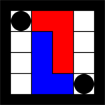

El juego L
Bienvenido al Juego L, pon a prueba tu pensamiento estratégico.
Menú principal
El juego L es un juego de dos jugadores jugado en un tablero de 4x4. Cada jugador tiene un tetrómino con forma de L de 3x2 y hay 2 piezas neutrales de 1x1.

En cada turno, un jugador deberá primero mover su pieza L, y entonces de forma opcional podrá mover una de las piezas neutrales. El juego se gana dejando al oponente sin movimientos posibles donde encajar su pieza L.
Perfil
Bienvenido ¿Deseas editar tu perfil?
Editar perfil
Acerca de:
El juego L es un juego simple de estrategia abstracta inventado por Edward de Bono. Presentado en su libro "The five Day Course in Thinking". En un juego con dos jugadores perfectos, ninguno va a perder o ganar. Hay 2296 distintos movimientos posibles validos en los que las piezas pueden ser posicionadas. Incluso si ninguno de los jugadores juega de forma perfecta, jugadas defensivas pueden continuar de forma indefinida si los jugadores son muy cautelozos con los movimientos de las piezas neutrales.